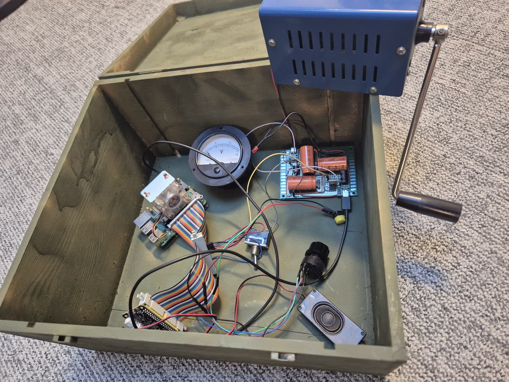

OutdoorGPT is a rugged, hand-cranked, fully off-grid AI. No signal. No cloud. No subscription. Just you, a crank, and an answer — wherever the map runs out.
Every answer starts as kinetic energy. Hold the crank, charge the cell, watch a thought assemble itself. The harder the question, the harder you work.
A quick question needs one arm. A long night in a cave needs the two of you, taking turns. A glacier in a whiteout needs the whole rope team on the handle. Pick the power your situation can muster.
A day's walk in, and dinner is whatever's left in the pack — oats, a bruised apple, one sad square of chocolate. You crank and ask what to make: foil-pack the lot at the fire's edge, five minutes, turn once. Recipes, knots, plant ID, "is this scat fresh" — answered one wrist at a time.
Two hundred metres of rock overhead, zero bars, and a long night ahead. Two of you take turns on the crank and ask the only question that matters down here — how do we survive the night? It answers: build a shelter, block the entrance, don't dig straight down.
A whiteout swallows the glacier. The whole rope team takes turns at the crank and asks how you cross a crevasse field blind: keep the rope short and tight, probe before you weight it, hold a compass bearing, one at a time.
Every token is generated on the device, in your hands, on the mountain. Your questions never leave the ridgeline — because there's nowhere for them to go.
Somewhere a gas plant is firing up to answer someone's question. Not yours. Yours costs one granola bar and a sore forearm. The grid stays off.
Pay once. Generate forever. No monthly fee, no rate limit, no quiet price hike. The only invoice OutdoorGPT sends is your resting heart rate.
A small model on a bare Raspberry Pi, running offline and grounded in real survival manuals. Capable AI was never really about the biggest model — sometimes it just needs to know the right things.
About one granola bar and a sore forearm. A data-centre model would quietly pull a few hundred watts off the grid to answer the same question; yours comes straight out of breakfast. Slower, sure — but the only power plant involved is you, and it shuts down the moment you stop cranking.
The device: none — it's cooled by whatever weather you're standing in. You: bring plenty. A large model in a warehouse can sip through litres of fresh water per conversation just to keep its chips cool. Out here the entire cooling loop is your own sweat, so the water bill is one swig from your bottle.
Then you've learned something useful about how badly you needed the answer. Most questions resolve themselves around the 40% mark.
Not while it's on the fire, no. Ask for a recipe and it prints to the e-ink screen — and e-ink keeps its last image with the power switched fully off. Crank once to pull up the meal, then let go and cook with both hands while it sits there, patient as a laminated card, until the coals have done their work. Everything else on the device fades the second you stop turning. The recipe stays put.
No. It cannot, and it never will, because it does not exist. Carry a real personal locator beacon or satellite messenger, tell someone your route, and don't trust a website like this one with your safety.
No Wi-Fi? Dead battery? Three days from the nearest bar of signal? Good. That's exactly where OutdoorGPT was made to think.
Request a field demoEverything above is a deliberate fiction — the glossy product, the field footage, the drop-tested IP68 shell. What sits in the box beside this text is not: our prototype really does work exactly as described. And the point it makes is serious: capable AI doesn't always need the biggest model or a hall full of GPUs. Ours is a real, hand-cranked, fully offline assistant: a small language model on a bare Raspberry Pi, answering real questions with no signal, no cloud and no subscription. It's a love letter to off-grid living, and a small act of faith that local, small AI can be more than enough. We built it to start a conversation and to use in our lectures. So argue with us about where capable AI is really headed, borrow the idea for your own classroom, and if the itch takes you, build your own — the whole thing, source, prompts, RAG pipeline and docs, is open on GitHub. Then set the screen down and go enjoy the outdoors!

The crank, the rotary dial and the whole Raspberry-Pi-in-a-field-phone idea come from Squeez Labs.
A fork of ktomanek's offline assistant (Apache 2.0): Moonshine for listening, Piper for speaking, llama.cpp for thinking.
Survival, first-aid and camp-cooking guides that are free to redistribute. Selection inspired by the survivalRAG project.
The wiring, the code, and the questionable decision to make a telephone think. Full source — prompts, RAG pipeline and docs — on GitHub.